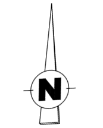

Votre navigateur ne prend pas en charge l'élément canvas.
Télécharger le plan au format image
Ajouter une tombe
Dessiner une tombe
Ossuaire
Par défaut :
2 m²
4 m²
Ajouter un élément
Dessiner un polygone
Dessiner un rectangle
Epaisseur du trait :
fin
moyen
épais
très épais
Nature de la forme
Normal
Carré

Ajouter une zone de texte
Dessiner une flèche
Annuler l'action en cours
Dupliquer un élément
Supprimer un élément
Photo aérienne
DTS/Tombes en procédure
Recollement
Cliquer sur la couleur puis les tombes à colorer
Indiquer la couleur des tombes
Cliquer sur le triangle en haut de chaque tombe
Indiquer le sens des tombes
Cliquer sur les 2 extrémités de l'étalon
Indiquer l'échelle du plan
Cliquer sur les 2 extrémités du segment à mesurer
Mesurer une distance
Sauvegarder